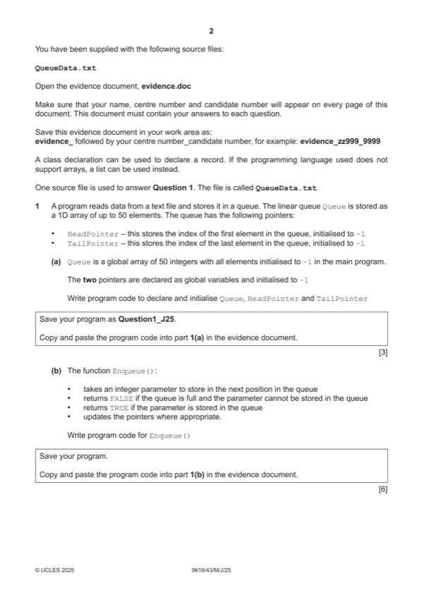

Question 1

Original paper page 2
Part 1(a) — solution
- (Global) Queue array with 50 integer elements …
- … all initialised to –1
- (Global) HeadPointer and TailPointer initialised with –1
Visual Basic (VB.NET)
Dim Queue(49) As Integer
Dim HeadPointer As Integer
Dim TailPointer As Integer
Sub Main(args As String())
HeadPointer = -1
TailPointer = -1
For x = 0 To 49
Queue(x) = -1
Next
End Sub
Python
Queue = [] #integer 50 elements
HeadPointer = -1
TailPointer = -1
#main
HeadPointer = -1
TailPointer = -1
for x in range(50):
Queue.append(-1)
Mark points
- (Global) Queue array with 50 integer elements …
- … all initialised to –1
- (Global) HeadPointer and TailPointer initialised with –1
Part 1(b) — solution
- Function Enqueue() header (and end) taking one (integer) parameter
- Checking if Queue is full …
- …returning FALSE if full and TRUE if not full
- (Otherwise) storing data item at TailPointer + 1 (check incrementing)
- Incrementing TailPointer
- Checking if this is the first element and incrementing/storing 0 in HeadPointer
Visual Basic (VB.NET)
Function Enqueue(DataValue As Integer)
If TailPointer < 49 Then
TailPointer = TailPointer + 1
Queue(TailPointer) = DataValue
If HeadPointer = -1 Then
HeadPointer = 0
End If
Return True
Else
Return False
End If
End Function
University Press & Assessment 2025 Page 10 of 45
9618/43 Cambridge International AS & A Level – Mark Scheme May/June 2025
Python
def Enqueue(Data):
global Queue
global TailPointer
global HeadPointer
if TailPointer < 49:
TailPointer = TailPointer + 1
Queue[TailPointer] = Data
if HeadPointer == -1:
HeadPointer = 0
return True
else:
return False
Mark points
- Function Enqueue() header (and end) taking one (integer) parameter
- Checking if Queue is full …
- …returning FALSE if full and TRUE if not full
- (Otherwise) storing data item at TailPointer + 1 (check incrementing)
- Incrementing TailPointer
- Checking if this is the first element and incrementing/storing 0 in HeadPointer
Part 1(c) — solution
- Function Dequeue() header (and close) and returning appropriate value in all cases
- Checking if queue is empty …
- … and returning –1 if empty
- Accessing and returning element at Queue[HeadPointer] (before HeadPointer is incremented)
- Incrementing HeadPointer
Visual Basic (VB.NET)
Function Dequeue()
Dim ReturnValue As Integer
If HeadPointer > -1 And HeadPointer <= TailPointer Then
ReturnValue = Queue(HeadPointer)
HeadPointer = HeadPointer + 1
Return ReturnValue
Else
Return -1
End If
End Function
Python
def Dequeue():
global Queue
global HeadPointer
if HeadPointer > -1 and HeadPointer <= TailPointer:
ReturnValue = Queue[HeadPointer]
HeadPointer = HeadPointer + 1
return ReturnValue
else:
return -1
Mark points
- Function Dequeue() header (and close) and returning appropriate value in all cases
- Checking if queue is empty …
- … and returning –1 if empty
- Accessing and returning element at Queue[HeadPointer] (before HeadPointer is incremented)
- Incrementing HeadPointer
Part 1(d) — solution
- CreateQueue() header (and end) and opening the file to read and closing file in appropriate place
- Looping until end of file
- Reading in each/all lines (and converting to integer and removing new line)
- … calling Enqueue() once with each value …
- … checking return value and outputting "Queue full" if full (can output once or many times)
- Exception try, catch with appropriate output. All file access within try
Visual Basic (VB.NET)
Sub CreateQueue()
Dim ReturnValue As Boolean
Dim ReadData As Integer
Try
Dim FileReader As New System.IO.StreamReader("QueueData.txt")
While Not FileReader.EndOfStream
ReadData = FileReader.ReadLine()
ReturnValue = Enqueue(ReadData)
If ReturnValue = False Then
Console.WriteLine("Queue full")
End If
End While
FileReader.Close()
Catch ex As Exception
Console.WriteLine("Cannot open or read file")
End Try
End Sub
University Press & Assessment 2025 Page 15 of 45
9618/43 Cambridge International AS & A Level – Mark Scheme May/June 2025
Python
def CreateQueue():
try:
File = open("QueueData.txt")
for Line in File:
ReturnValue = Enqueue(int(Line))
if ReturnValue == False:
print("Queue full")
break;
File.close()
except:
print("Cannot open or read file")
Mark points
- CreateQueue() header (and end) and opening the file to read and closing file in appropriate place
- Looping until end of file
- Reading in each/all lines (and converting to integer and removing new line)
- … calling Enqueue() once with each value …
- … checking return value and outputting "Queue full" if full (can output once or many times)
- Exception try, catch with appropriate output. All file access within try
Part 1(e)(i) — solution
- Calling CreateQueue()
- Calling Dequeue() and storing/using return value …
- … repeatedly until return value is –1
- … adding together all return values to create a total within the loop …
- … outputting the total
Visual Basic (VB.NET)
CreateQueue()
Dim Total As Integer = 0
Dim ReturnValue As Integer = 0
While ReturnValue > -1
ReturnValue = Dequeue()
If ReturnValue <> -1 Then
Total = Total + ReturnValue
End If
End While
Console.WriteLine("The total is " & Total)
Python
CreateQueue()
Total = 0
ReturnValue = 0
while ReturnValue > -1:
ReturnValue = Dequeue()
if ReturnValue != -1:
Total = Total + ReturnValue
print("The total is", Total)
University Press & Assessment 2025 Page 17 of 45
9618/43 Cambridge International AS & A Level – Mark Scheme May/June 2025
Mark points
- Calling CreateQueue()
- Calling Dequeue() and storing/using return value …
- … repeatedly until return value is –1
- … adding together all return values to create a total within the loop …
- … outputting the total
Part 1(e)(ii) — solution
1 mark for screenshot showing 3059 1
University Press & Assessment 2025 Page 18 of 45
9618/43 Cambridge International AS & A Level – Mark Scheme May/June 2025
Mark points
- Include the ideas shown in the solution above.